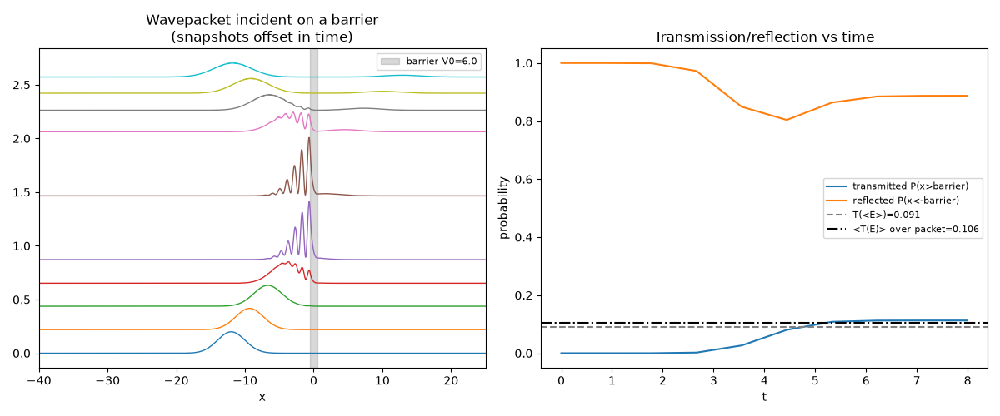
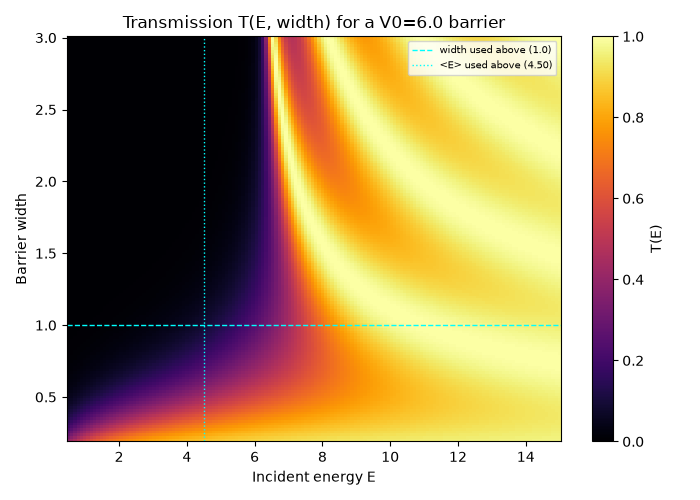

Note
Go to the end to download the full example code.
Real-time barrier tunneling#
Propagates a Gaussian wavepacket incident on a finite rectangular barrier
\(V(x) = V_0\) for \(\lvert x\rvert < \text{width}/2\), using the
FFT split-operator solver, and compares the numerically transmitted
probability to the exact analytic transmission coefficient \(T(E)\)
(reusing scattering
with a negative “depth”, which turns the well into a barrier of the same
\(\lvert V_0\rvert\)).
import matplotlib.pyplot as plt
import numpy as np
from physicskit.quantum.chapters.potentials import FiniteSquareWell
from physicskit.quantum.core.solvers import SplitOperatorSolver1D
from physicskit.quantum.utils.measure import momentum_density, momentum_expectation
Setup: a barrier, and a packet with mean KE comparable to its height#
V0, width = 6.0, 1.0
x = np.linspace(-50, 50, 4096)
def V(x):
return np.where(np.abs(x) <= width / 2, V0, 0.0)
k0 = 3.0
sigma0 = 2.0
x_start = -12.0
psi0 = (2 * np.pi * sigma0**2) ** (-0.25) * np.exp(-((x - x_start) ** 2) / (4 * sigma0**2)) * np.exp(1j * k0 * x)
solver = SplitOperatorSolver1D(x, V, dt=1e-3)
psi0 /= np.sqrt(solver.norm(psi0))
E_mean = momentum_expectation(x, psi0) ** 2 / 2 # <p>^2/2m, m=1
print(f"barrier height V0={V0}, mean kinetic energy <E>~{E_mean:.2f}")
t_max = 8.0 # long enough for the packet (group velocity v=k0=3) to cross x=-12 -> +12 and separate
n_steps = int(t_max / solver.dt)
save_every = n_steps // 9
frames, times = solver.propagate(psi0, n_steps, save_every=save_every)
barrier height V0=6.0, mean kinetic energy <E>~4.50
A waterfall plot of the wavepacket sweeping through the barrier, and the transmission/reflection probability vs. time compared to the analytic transmission coefficient – properly averaged over the packet’s actual momentum-space distribution \(\lvert\psi(p)\rvert^2\), since \(T(E)\) is steep near \(E\sim V_0\) and the packet has real momentum spread.
fig, (ax1, ax2) = plt.subplots(1, 2, figsize=(12, 5))
offset = 0
for i, _t in enumerate(times):
density = np.abs(frames[i]) ** 2
ax1.plot(x, density + offset, color=f"C{i % 10}", lw=1)
offset += density.max() * 1.1
ax1.axvspan(-width / 2, width / 2, color="gray", alpha=0.3, label=f"barrier V0={V0}")
ax1.set_xlim(-40, 25)
ax1.set_xlabel("x")
ax1.set_title("Wavepacket incident on a barrier\n(snapshots offset in time)")
ax1.legend(fontsize=8)
transmitted = np.array([np.trapezoid(np.abs(f[x > width / 2]) ** 2, x[x > width / 2]) for f in frames])
reflected = np.array([np.trapezoid(np.abs(f[x < -width / 2]) ** 2, x[x < -width / 2]) for f in frames])
ax2.plot(times, transmitted, label="transmitted P(x>barrier)")
ax2.plot(times, reflected, label="reflected P(x<-barrier)")
barrier_model = FiniteSquareWell(V0=-V0, width=width)
analytic_T_mean = barrier_model.scattering(E_mean).T
p, psi_p = momentum_density(x, psi0)
E_p = p**2 / 2
T_p = np.array([barrier_model.scattering(E).T if E > 0 else 0.0 for E in E_p])
weight = np.abs(psi_p) ** 2
analytic_T_avg = np.trapezoid(T_p * weight, p) / np.trapezoid(weight, p)
ax2.axhline(analytic_T_mean, color="gray", ls="--", label=f"T(<E>)={analytic_T_mean:.3f}")
ax2.axhline(analytic_T_avg, color="black", ls="-.", label=f"<T(E)> over packet={analytic_T_avg:.3f}")
ax2.set_xlabel("t")
ax2.set_ylabel("probability")
ax2.set_title("Transmission/reflection vs time")
ax2.legend(fontsize=8)
fig.tight_layout()
print(f"final transmitted probability: {transmitted[-1]:.4f}")
print(f"analytic T(<E>): {analytic_T_mean:.4f} analytic <T(E)> over packet: {analytic_T_avg:.4f}")
print(f"norm conservation check: {solver.norm(frames[-1]):.8f}")

final transmitted probability: 0.1127
analytic T(<E>): 0.0910 analytic <T(E)> over packet: 0.1057
norm conservation check: 1.00000000
An animated view of the same physics#
wavepacket_scattering()
wraps the same FFT split-operator setup (a negative well depth turns
FiniteSquareWell into a
barrier) into a single call, shared with the well-scattering demo in
The Ramsauer-Townsend effect;
animate_density()
renders it frame by frame, phase-colored, as the packet splits into a
reflected and a transmitted piece in real time.
from physicskit.quantum.visualizers.wavefunctions import animate_density # noqa: E402
barrier = FiniteSquareWell(V0=-V0, width=width)
xb, frames_b, times_b = barrier.wavepacket_scattering(
x_extent=25.0,
n_points=1024,
x0=-10.0,
sigma0=1.5,
k0=None,
dt=1e-1,
n_steps=500,
save_every=100,
)
anim = animate_density(xb, frames_b, times=times_b)
# anim.save("barrier_tunneling.gif", writer="pillow", fps=15)
A 2D transmission map over energy and barrier width#
The single \(T(\langle E\rangle)\) value used above is one point on a
full 2D landscape: scattering()
gives the exact analytic \(T(E)\) for any barrier width, so sweeping
both incident energy and width traces out the bright/dark fringes where
quantum interference between the two barrier edges enhances or suppresses
transmission – exactly the interference structure a single 1D scan (as
in The Ramsauer-Townsend effect)
cannot show at once.
E_map = np.linspace(0.5, 15.0, 150)
width_map = np.linspace(0.2, 3.0, 150)
T_map = np.zeros((len(width_map), len(E_map)))
for i, w in enumerate(width_map):
barrier_w = FiniteSquareWell(V0=-V0, width=w)
T_map[i, :] = barrier_w.transmission_spectrum(E_map)
fig3, ax3 = plt.subplots(figsize=(7, 5))
im = ax3.pcolormesh(E_map, width_map, T_map, shading="auto", cmap="inferno", vmin=0, vmax=1)
ax3.axhline(width, color="cyan", ls="--", lw=1, label=f"width used above ({width})")
ax3.axvline(E_mean, color="cyan", ls=":", lw=1, label=f"<E> used above ({E_mean:.2f})")
ax3.set_xlabel("Incident energy E")
ax3.set_ylabel("Barrier width")
ax3.set_title(f"Transmission T(E, width) for a V0={V0} barrier")
ax3.legend(fontsize=7)
fig3.colorbar(im, ax=ax3, label="T(E)")
fig3.tight_layout()

Check#
The simulated transmission matches the packet-averaged analytic T(E) (not T at the mean energy), probability is conserved, and T + R = 1.
assert abs(transmitted[-1] - analytic_T_avg) < 0.01
assert abs(solver.norm(frames[-1]) - 1) < 1e-6
assert abs(transmitted[-1] + reflected[-1] - 1) < 0.01
# opaque limit: T falls off exponentially with the barrier width below the top
assert T_map[-1, 0] < 1e-3 * T_map[0, 0]
Total running time of the script: (0 minutes 2.697 seconds)